www.chandler.com


Bing! is Gaelic for “Thy turkey’s done”.
Chandler’s joke, “Bing! is Gaelic for ‘Thy turkey’s done,’” perfectly reflects his defining traits—using absurd, self-deprecating humor to mask discomfort, deflect seriousness, and turn even his own last name into a sarcastic punchline whenever he feels awkward.
BING!
CHANDLER
-
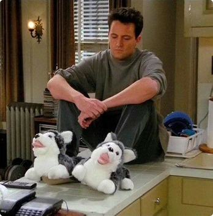
Chandler Muriel Bing — proof that even the king of sarcasm wasn’t spared from an embarrassing middle name. He spends his days deflecting awkwardness with jokes, witty remarks, and endless self-deprecation, yet ‘Muriel’ is the one punchline that follows him everywhere, no escape possible. It’s a reminder that even the funniest people have their insecurities, and Chandler turns every awkward moment, including his own name, into humor, charm, and a way to connect with those around him.
- 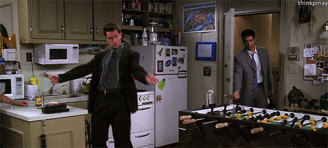 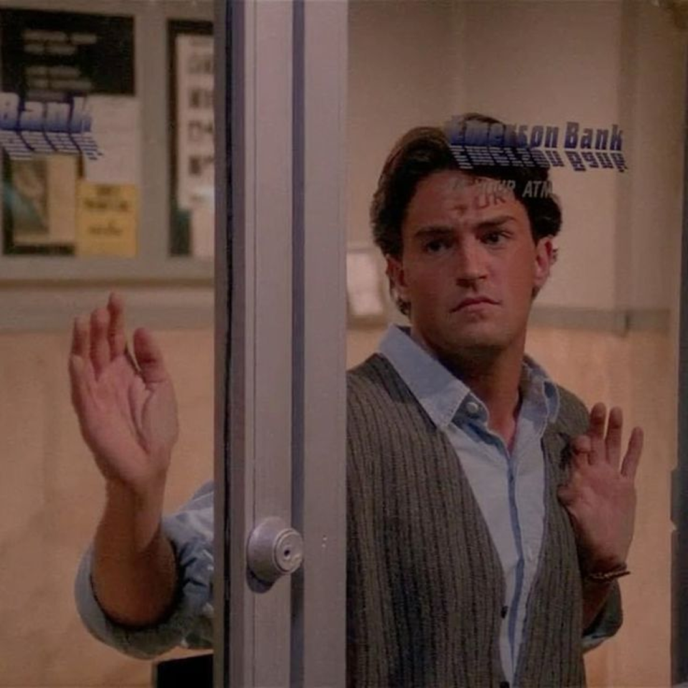

Who is
chadler?
-
Sarcasm
Chandler’s sarcasm isn’t just humor — it’s armor. Every joke hides a bit of discomfort, every punchline a little fear of being seen too clearly. Yet somehow, his quick wit turns pain into laughter, making awkwardness his greatest superpower.
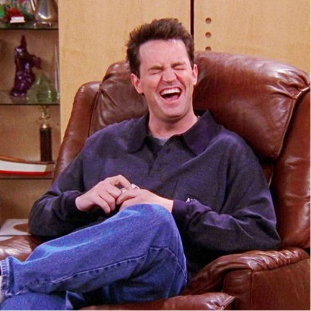 -
Insecurity
Beneath the jokes and the smirks, Chandler is a man constantly doubting himself — never quite believing he deserves the love and stability he secretly craves. His humor may mask it, but his vulnerability is what makes him human.
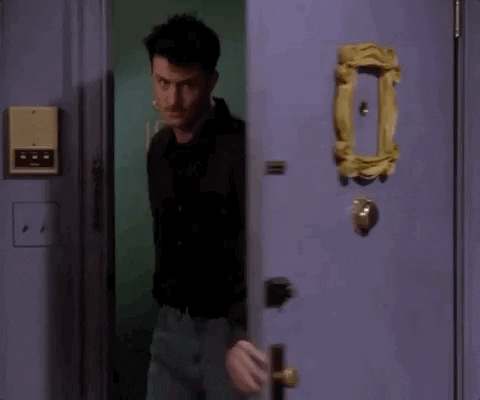 -
Commitment
The man who once couldn’t commit to a weekend plan ends up building a life with the woman he loves. Chandler’s journey from fear to devotion shows that real commitment isn’t about perfection — it’s about choosing someone, every single day.
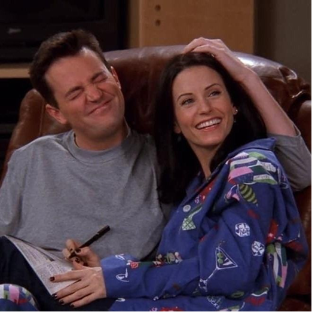
-
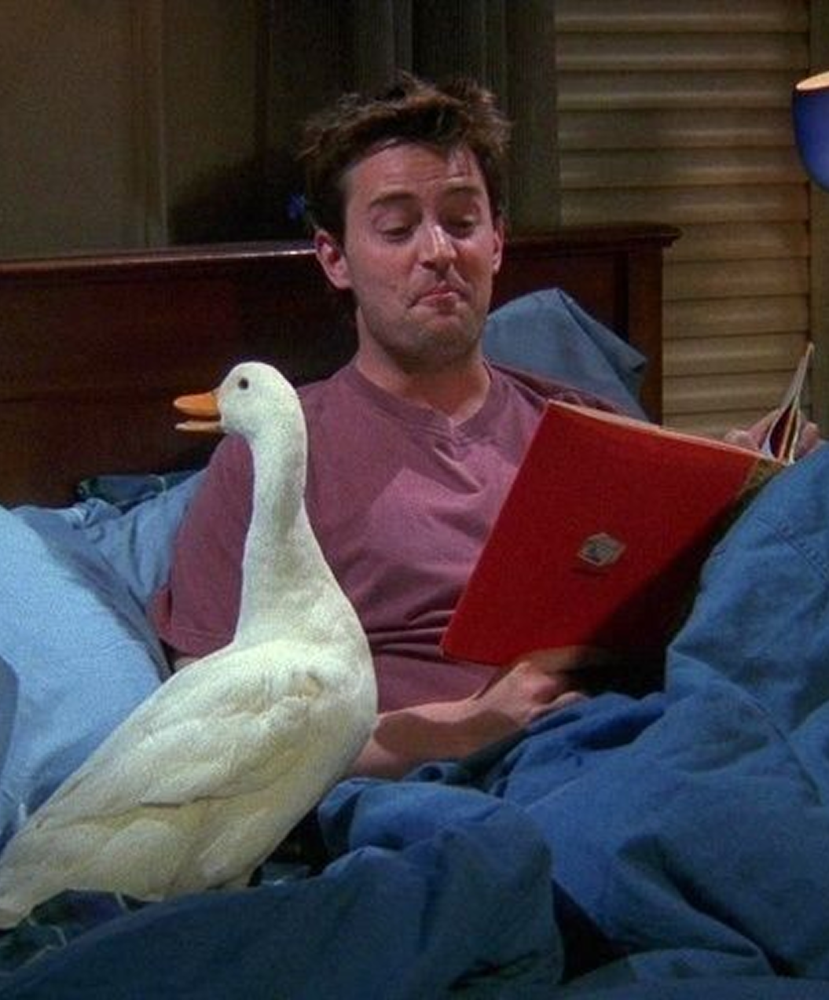

You know, buddy, sometimes life feels like a sitcom — except no one’s laughing until the rerun. I used to think sarcasm could fix everything, but over time I’ve learned that love, honesty, and a really good nap do a better job. Life throws awkward moments, weird coincidences, and totally confusing people your way, but that’s when humor becomes your lifeline. If you ever feel lost, just remember — don’t swim against the current, pick your battles, and absolutely stay away from Joey’s sandwiches. Life’s messy, unpredictable, and ridiculous… and sometimes, that’s exactly what makes it worth living.
A TALK
WITH
THE
DUCK
CHANDLER'S
OFFICE
SURVIVAL
TIPS
-
Tip 1 Always look busy
Open Excel, stare intensely, and occasionally sigh. It’s called professional acting.
-
Tip 2 Sarcasm is
a management skillWhen in doubt, make a joke. It won’t solve your problem, but it’ll confuse your boss long enough for you to escape.
-
Tip 3 Avoid meetings by
scheduling another meetingIf you look like you’re in demand, no one will realize you’re avoiding work. Genius.
-
Tip 4 Never let them know
what your job actually isAmbiguity is power. The less they understand, the more important you seem.
JOEY AND
CHANDLER'S
APARTMENT
-
Their apartment may not be stylish, perfectly decorated, or immaculately organized, but within those walls live every ridiculous memory, every laugh-out-loud moment, every late-night confession, and every heartfelt argument that shaped who they are. It’s the place where friendships were tested, bonds were strengthened, and ordinary days turned into unforgettable stories. More than just a living space, their apartment is a silent witness to all the chaos, love, and laughter that made their time together truly magical.
- 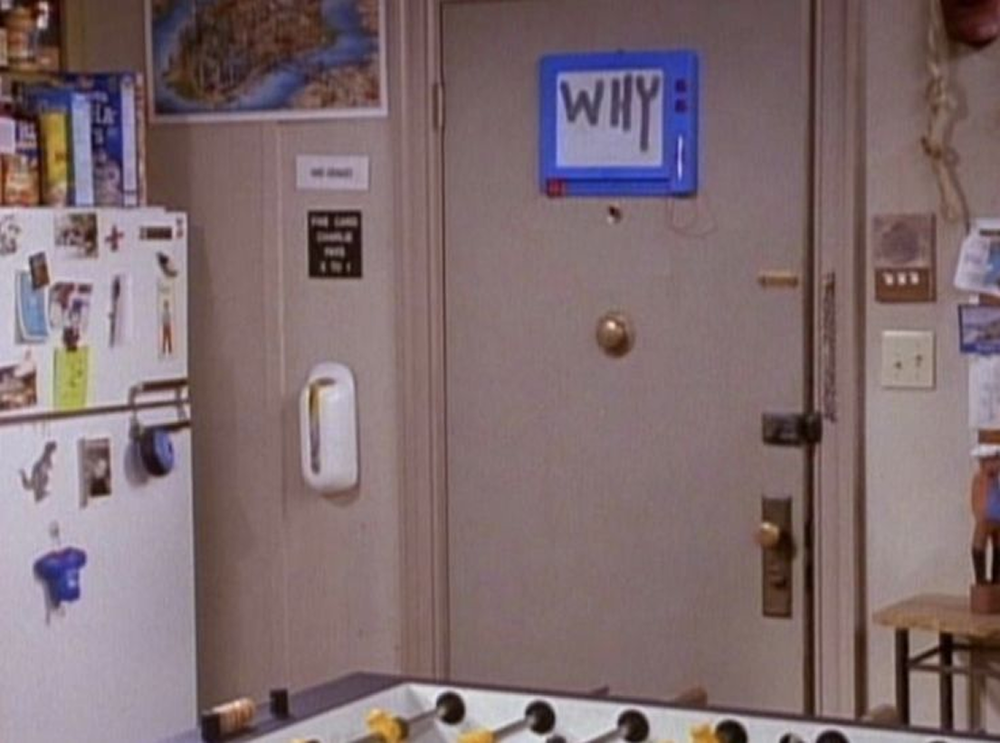 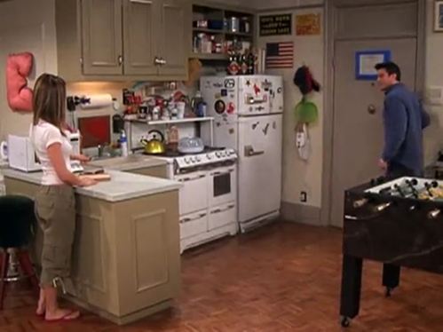
- 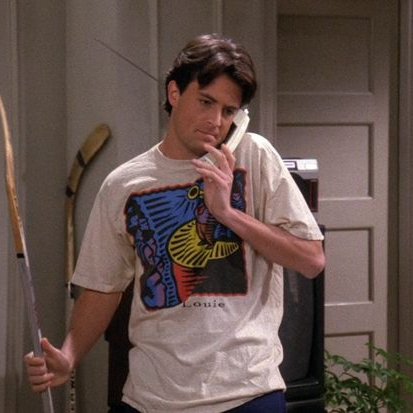 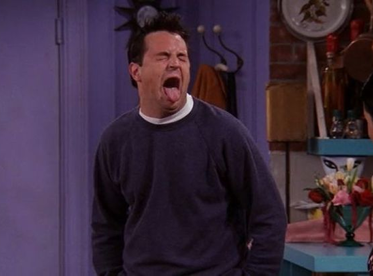
-
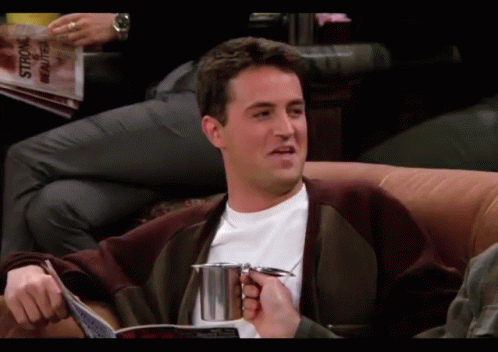
When the jokes quiet down, Chandler Bing stands as the guy who loved deeply, tried honestly, and hid his heart behind sarcasm until he felt safe. This page may end, but his humor and awkward charm stay with us — proof that even the most uncertain souls can find a place where they’re completely loved.